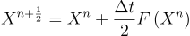

Simulation
Shown below is a real time simulation of the shallow water equations. The model does not preserve momentum,
thus the equations used and shown below are simplified.
The simulation uses the Arakawa scheme [1] and is shown below. The velocities are offset from the height
grid in
order to
represent flow between height cells. If the velocity components were not offset then the water velocities
would represent net flux of water at a given point rather then the velocity of water between two points.
The equations used in the water simulation are shown below. Equations (1,2) are used first and they define
the velocities of the water. Equation (3) uses the velocities calculated in equations (1,2) to calculate the
change in height. Equations (4,5) define the half indicies used in equation (3).
Time Stepping Scheme
The simulation uses the Matsuno time steping scheme. The Matsuno is used rather then an explicit time step
because it results in a more stable simulation. If an explicit time step was used then the model can
overshot the correct results leading to instability. A time step is represented as,
First A half time step is taken as shown below,

Next a full time step is taken using the information generated from the half time step.
Limitations of Model
The model inherits the limitations form the shallow water equations as discussed in the Shallow Water
Equations Section. The model is also unstable under high time steps which could be explained by the
simulation overshooting the correct result when simulating a timestep.